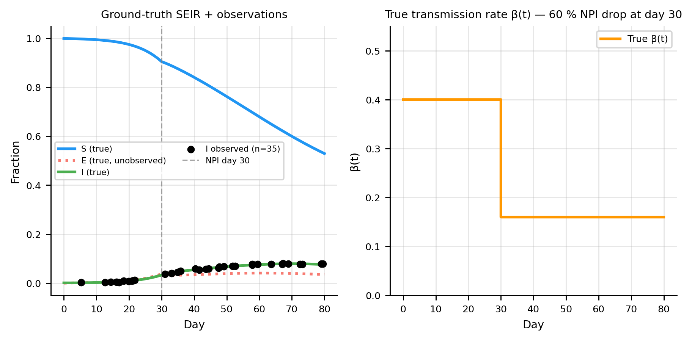

Code
import numpy as np
from scipy.integrate import odeint as scipy_odeint
import matplotlib.pyplot as plt
import torch
import torch.nn as nn
torch.manual_seed(42); np.random.seed(42)
plt.rcParams.update({
"figure.dpi": 130,
"axes.spines.top": False,
"axes.spines.right": False,
"axes.grid": True,
"grid.alpha": 0.3,
"font.size": 8,
"axes.titlesize": 8,
"axes.labelsize": 8,
"xtick.labelsize": 7,
"ytick.labelsize": 7,
"legend.fontsize": 7,
})
C_S, C_I, C_R = "#2196F3", "#F44336", "#4CAF50"
C_OBS, C_PINN = "black", "#9C27B0"
C_BETA = "#FF9800" # orange for β(t) curves
# ── Ground-truth parameters ────────────────────────────────────────────────────
sigma_true = 1 / 5.0 # incubation rate (5-day latent period)
gamma_true = 1 / 10.0 # recovery rate (10-day infectious period)
T_max = 80.0
BETA_HIGH, BETA_LOW, NPI_DAY = 0.40, 0.16, 30.0
def beta_true(t):
"""Step-function NPI: β drops 60 % on day 30."""
return BETA_HIGH if t < NPI_DAY else BETA_LOW
def seir_rhs(y, t):
s, e, i, r = y
b = beta_true(t)
return [-b*s*i, b*s*i - sigma_true*e, sigma_true*e - gamma_true*i, gamma_true*i]
I0_frac = 1e-3
y0 = [1 - I0_frac, 0.0, I0_frac, 0.0]
t_grid = np.linspace(0, T_max, 2000)
sol = scipy_odeint(seir_rhs, y0, t_grid)
# ── Sparse, noisy observations of I only ──────────────────────────────────────
n_obs = 35
obs_idx = np.sort(np.random.choice(np.arange(10, 2000), n_obs, replace=False))
t_obs_np = t_grid[obs_idx]
i_clean = sol[obs_idx, 2]
noise_sd = 0.02 * i_clean.max()
i_noisy = np.clip(i_clean + np.random.normal(0, noise_sd, n_obs), 0, 1)
# ── Plot ───────────────────────────────────────────────────────────────────────
fig, axes = plt.subplots(1, 2, figsize=(7, 3.5))
ax = axes[0]
ax.plot(t_grid, sol[:, 0], color=C_S, lw=2, label="S (true)")
ax.plot(t_grid, sol[:, 1], color=C_I, lw=2, ls=":", alpha=0.7,
label="E (true, unobserved)")
ax.plot(t_grid, sol[:, 2], color=C_R, lw=2, label="I (true)")
ax.scatter(t_obs_np, i_noisy, color=C_OBS, s=20, zorder=5,
label=f"I observed (n={n_obs})")
ax.axvline(NPI_DAY, color="gray", lw=1, ls="--", alpha=0.7, label="NPI day 30")
ax.set(xlabel="Day", ylabel="Fraction", title="Ground-truth SEIR + observations")
ax.legend(ncol=2, fontsize=6)
ax = axes[1]
beta_arr = [beta_true(t) for t in t_grid]
ax.step(t_grid, beta_arr, where="post", color=C_BETA, lw=2, label="True β(t)")
ax.set(xlabel="Day", ylabel="β(t)",
title="True transmission rate β(t) — 60 % NPI drop at day 30")
ax.set_ylim(0, 0.55)
ax.legend()
plt.tight_layout(); plt.show()
print(f"R₀ (pre-NPI): {BETA_HIGH / gamma_true:.1f}")
print(f"R₀ (post-NPI): {BETA_LOW / gamma_true:.1f}")
print(f"Peak I: {sol[:, 2].max()*100:.1f}% on day {t_grid[sol[:,2].argmax()]:.0f}")
R₀ (pre-NPI): 4.0
R₀ (post-NPI): 1.6
Peak I: 7.9% on day 70